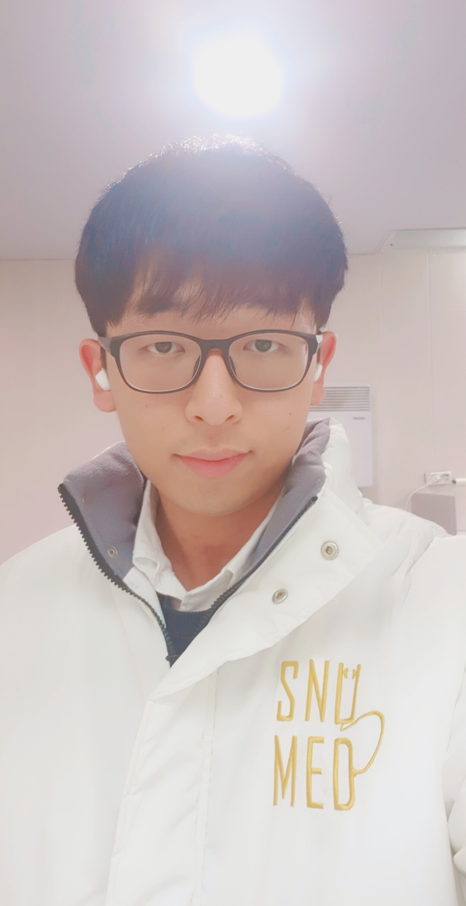
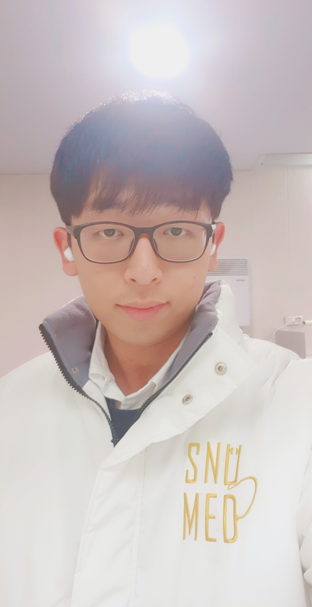

김규민 멘토님 (남)
서울대학교 의예과
[여름방학] 고등학교 1학년부터 공부해서 서울대 의대 수석이 되는 방법
학습 방법 멘토링
동기 부여 멘토링
입시 상담 멘토링
1:1 멘토링 (90분)
개인맞춤 멘토링 일지
멘토링 이후 두번의 무료 피드백 제공
서울대 관악캠퍼스 또는 협의
가능
30% 할인
199,000원
149,000원
멘토 이력
본인 인증 완료
학교 인증 완료
코로나 안전 완료
-
서울대학교 의예과 (수석 입학)
-
2019 입학
-
안양시청 주관 멘토링 프로그램 멘토
-
서울대학교 의과대학 차원 수성고등학교 학생 멘토링 담당 멘토
-
유튜브 연고티비 "서울대의대 수시 수석은 누가 할까?"출연 후 다수의
중고등학생 멘토
수강생을 위한
특별한 혜택!
특별한 혜택!
1.
SKY에 입학한 멘토의 방학 공부법, 학생부 준비법, 동기부여에 관한
1:1 개인 맞춤 멘토링
2.
멘티 학생에게 맞춤화된 멘토링 일지 제공
3.
멘토링 이후, 학습법, 공부법 등에 대한 2회 무료 질문권 제공
4.
실제 SKY 재학생에게 받는 캠퍼스 투어 (선택 사항)
서울대에 간다고
마음은 단단히 먹었는데...
마음은 단단히 먹었는데...
고등학교 1학년을 대비하는
방학은 어떻게 보내야할까 고민이라면
방학은 어떻게 보내야할까 고민이라면
중학교 내신이 좋지 않아
고등학교 생활이 걱정이라면
고등학교 생활이 걱정이라면
공부해야할 동기부여를
듬뿍 받아가고 싶다면
듬뿍 받아가고 싶다면
막상 어떤 진로를 선택해서
공부해야할지 모르겠다면
공부해야할지 모르겠다면
이제 걱정하지 말고
이대로만 시작해보세요
이대로만 시작해보세요
동기부여 방학 공부법
서울대 의대 진학의 A to Z
서울대 의대 진학의 A to Z
1.
학습의 본질을 꿰뚫는 공부
저는 최선의 동기부여와 학습의 본질을 꿰뚫는 공부를 가르쳐줍니다.
단순한 공부법이 아닌, 학생이 학습의 즐거움을 느끼며 저절로
성공적인 입시로 도착할 수 있도록, 더 나아가 인생 전반에서 행복한
학습을 만끽할 수 있도록 지도합니다. 저의 경험과 교육에 관한
깨달음을 통해 학습자에게 최고의 멘토가 되어줄 수 있습니다.
최고의 멘토는 학습의 본질을 꿰뚫어야합니다.
중학교 때 농구 선수를 준비했던 제가 학습의 본질을 꿰뚫어 서울대학교 의과대학 수시 수석으로 입학할 수 있었던 비법, 저 뿐 아니라 제가 가르친 전교 200등 학생이 본질을 깨닫고 전교 1등이 될 수 있었던 그 비법을 가감없이 알려드리겠습니다.
최고의 멘토는 학습의 본질을 꿰뚫어야합니다.
중학교 때 농구 선수를 준비했던 제가 학습의 본질을 꿰뚫어 서울대학교 의과대학 수시 수석으로 입학할 수 있었던 비법, 저 뿐 아니라 제가 가르친 전교 200등 학생이 본질을 깨닫고 전교 1등이 될 수 있었던 그 비법을 가감없이 알려드리겠습니다.
2.
꿈을 찾아 자기주도적 학습이 가능하게 하는 멘토링
꿈을 찾으면 "학습의 즐거움"을 느낄 수 있고, 그렇게 되면
근본적으로 변화합니다. 제가 직접 겪어봤기에 가장 확실하고, 가장
잘 알려줄 수 있습니다.
중학교 시절, 저는 공부와는 거리가 정말 먼 삶을 살았습니다. 프로농구선수가 되고자 하는 꿈을 가지고 있었기에, 공부와는 거리가 멀게 살았지만, 키가 작아 프로농구 선수가 될 수 없다는 말에 저는 무너졌습니다.
이후 고등학교 1학년 때에는 정말 많은 방황을 했습니다.공부를 왜 해야겠는지도 모르겠고, 어떻게 하는지도 까먹은 상태였습니다.
그러던 중, '의사'라는 꿈을 갖게 되었고, 꿈을 가지자 공부를 해야 하는 이유가 생겼습니다. 다시 호기롭게 펜을 들고 공부를 해보려 책상 앞에 앉았지요. 그렇지만 여전히 막막했습니다. 도대체 어떻게 공부를 했던 것인지 기억이 나지 않았습니다. 그래서 닥치는대로 이것저것 여러 가지 방법을 시도해보았습니다. 일주일 동안 허리 안 굽히기 운동, 선생님이 하시는 모든 말씀 받아 적기, 교과서 베껴 적기, 등. 물론 지나고 나서 보니 좋지 않은 방법들이 정말 많았습니다. 그렇지만 여러 시행착오를 겪어보다 보니 점점 깨닫는 것들이 생겼습니다.
“학습의 즐거움”을 느끼는 것이 가장 핵심적인 본질이라는 깨달음이 생겼습니다. 보지 못했던 것을 볼 수 있게 되고, 생각하지 못했던 것들을 생각할 수 있게 되는 것, 즉 스스로의 세상이 바뀐다는 것이 얼마나 즐거운 일인지 알게 되었습니다. 그렇게 점차 학습에서 오는 진정한 즐거움을 조금씩 느끼며 공부를 하자, 공부하는 모든 순간들이 행복해졌습니다. 학교에 있든, 학원에 있든, 집에서 혼자 공부를 하든, 늘 학습의 즐거움을 온몸으로 만끽할 수 있었습니다.
제가 느낀 것들, 제가 변화할 수 있었던 것들을 가감없이 전달하겠습니다. 지금 바로 변화시켜보세요. 그러면 훌륭한 꿈을 품고 학습의 즐거움을 깨달을 겁니다. 제가 꼭 그렇게 하도록 지도하겠습니다.
중학교 시절, 저는 공부와는 거리가 정말 먼 삶을 살았습니다. 프로농구선수가 되고자 하는 꿈을 가지고 있었기에, 공부와는 거리가 멀게 살았지만, 키가 작아 프로농구 선수가 될 수 없다는 말에 저는 무너졌습니다.
이후 고등학교 1학년 때에는 정말 많은 방황을 했습니다.공부를 왜 해야겠는지도 모르겠고, 어떻게 하는지도 까먹은 상태였습니다.
그러던 중, '의사'라는 꿈을 갖게 되었고, 꿈을 가지자 공부를 해야 하는 이유가 생겼습니다. 다시 호기롭게 펜을 들고 공부를 해보려 책상 앞에 앉았지요. 그렇지만 여전히 막막했습니다. 도대체 어떻게 공부를 했던 것인지 기억이 나지 않았습니다. 그래서 닥치는대로 이것저것 여러 가지 방법을 시도해보았습니다. 일주일 동안 허리 안 굽히기 운동, 선생님이 하시는 모든 말씀 받아 적기, 교과서 베껴 적기, 등. 물론 지나고 나서 보니 좋지 않은 방법들이 정말 많았습니다. 그렇지만 여러 시행착오를 겪어보다 보니 점점 깨닫는 것들이 생겼습니다.
“학습의 즐거움”을 느끼는 것이 가장 핵심적인 본질이라는 깨달음이 생겼습니다. 보지 못했던 것을 볼 수 있게 되고, 생각하지 못했던 것들을 생각할 수 있게 되는 것, 즉 스스로의 세상이 바뀐다는 것이 얼마나 즐거운 일인지 알게 되었습니다. 그렇게 점차 학습에서 오는 진정한 즐거움을 조금씩 느끼며 공부를 하자, 공부하는 모든 순간들이 행복해졌습니다. 학교에 있든, 학원에 있든, 집에서 혼자 공부를 하든, 늘 학습의 즐거움을 온몸으로 만끽할 수 있었습니다.
제가 느낀 것들, 제가 변화할 수 있었던 것들을 가감없이 전달하겠습니다. 지금 바로 변화시켜보세요. 그러면 훌륭한 꿈을 품고 학습의 즐거움을 깨달을 겁니다. 제가 꼭 그렇게 하도록 지도하겠습니다.
3.
실질적인 변화가 있는 멘토링
의대에 진학한 이 후, 총 21명의 학생들을 1 : 1 로 지도했습니다.
그 중에서는 너무나 절박한 학습자도 있었던 반면, 왜 학습을
해야하는지조차 잘 알지 못하던 학생도 있었습니다.
이 학생은 고1때까지는 흔히 말하는 날라리였습니다. 담배를 피고 오토바이를 타고 다니며, 전교생 300명이 안 되는 일반고에서 200등이 넘었으니 말입니다. 이 학생과 작년 초에 만났을 때, 저는 이 학생에게 무엇보다 우선 "학습이라는 것은 실은 굉장히 즐겁고 행복한 것이다."라는 것을 알려주고 직접 느껴볼 수 있게끔 했습니다. 학습은 늘 따분하고 힘든 것이라 생각하던 그 학생은 점점 학습의 즐거움을 알아갔고, 점점 더 나아가 "너무 재미있어요!"라는 말을 곧잘 내뱉게 되었습니다.
그래서 작년 처음 시작할 때는 200등이 넘던 이 학생은 과외를 시작한 바로 다음에 친 고2 중간고사에서 전교1등을 하였고, 고3이 된 지금까지도 쭉 전교 1등을 유지하고 있습니다. 꿈이 없던 이 친구는 지금 "ICT 플랫폼 공학자"라는 가슴 벅찬 꿈을 가슴 속에 품고 있기도 합니다.
저는 정말 많은 학생들을 변화시켜왔습니다. 이제 그 변화의 주인공이 되어보세요. 확신할 수 있습니다.
이 학생은 고1때까지는 흔히 말하는 날라리였습니다. 담배를 피고 오토바이를 타고 다니며, 전교생 300명이 안 되는 일반고에서 200등이 넘었으니 말입니다. 이 학생과 작년 초에 만났을 때, 저는 이 학생에게 무엇보다 우선 "학습이라는 것은 실은 굉장히 즐겁고 행복한 것이다."라는 것을 알려주고 직접 느껴볼 수 있게끔 했습니다. 학습은 늘 따분하고 힘든 것이라 생각하던 그 학생은 점점 학습의 즐거움을 알아갔고, 점점 더 나아가 "너무 재미있어요!"라는 말을 곧잘 내뱉게 되었습니다.
그래서 작년 처음 시작할 때는 200등이 넘던 이 학생은 과외를 시작한 바로 다음에 친 고2 중간고사에서 전교1등을 하였고, 고3이 된 지금까지도 쭉 전교 1등을 유지하고 있습니다. 꿈이 없던 이 친구는 지금 "ICT 플랫폼 공학자"라는 가슴 벅찬 꿈을 가슴 속에 품고 있기도 합니다.
저는 정말 많은 학생들을 변화시켜왔습니다. 이제 그 변화의 주인공이 되어보세요. 확신할 수 있습니다.
이런 학생들을 위한
멘토링 입니다.
멘토링 입니다.
이제 방학을 앞두고 어떻게 보낼지 고민인 학생들
공부를 해도 성적이 계속 그대로인 학생들
왜 공부를 해야 하는지 모르고 그냥 하는 학생들
최상위권으로 도약하고 싶은 학생들
멘토링 커리큘럼
멘토링 전
멘티 성격 파악 및 멘토링 스타일 결정
사전 질문을 통한 개인화된 멘토링 목표 정하기
1:1 멘토링
1:1 멘토링은 아래의 주제 중 원하는 멘토링 주제를 선택하여
신청하시면 됩니다. 최대 2개까지 선택 가능합니다 ☺️
동기 부여 멘토링
학생의 성격을 파악해 가장 잘 맞는 진로를 함께 고민해주고
결과적으로 동기부여되어 공부할 수 있도록 합니다.
입시 상담 멘토링
학생부 / 정시 등 입시전략은 어떻게 준비해야 하는지, SKY
대학을 당당히 합격한 비법을 알려드립니다
학습 방법 멘토링
각 과목 (국어 / 수학 / 영어)는 어떻게 해야하는지, 방학에는
어떻게 공부시간을 조절하고 멘탈을 관리하는지 정말 100%
활용해서 쓸 수 있는 방법만 알려드리곘습니다.
멘토링 이후
멘토링 일지 (멘토링 일지에는 멘토와 멘티가 함께 정한 구체적인
목표가 포함되어 있습니다.)
학습법, 공부법 등에 대한 피드백 멘토링 (2회 무료 질문권)
멘토링 이용 방법 안내